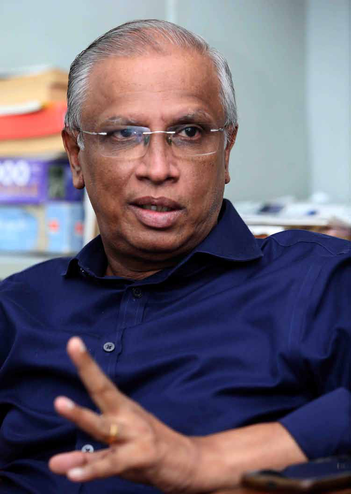
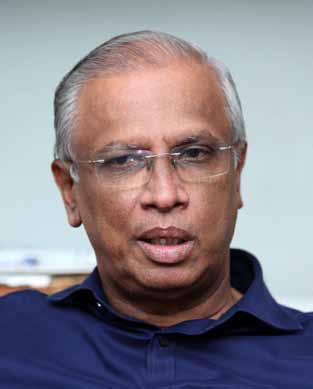

"The Majority of Tamils Support Ranil, I Personally Prefer AKD"
"The Majority of Tamils Support Ranil, I Personally Prefer AKD"
Jaffna Monitor hellojaffnamonitor@gmail.com 25 W e met M.A. Sumanthiran at his Colombo residence. A prominent civil lawyer with an illustrious career in civil litigation, human rights, and constitutional law, Sumanthiran has represented the Jaffna District as a Member of Parliament since 2015. Prior to that, from 2010 to 2015, he served as a National List MP under the banner of the Illankai Tamil Arasu Kachchi. What follows are excerpts from a wide-ranging and hard- hitting interview with him. Part 2 of this candid conversation will be featured in our next issue. The Illankai Tamil Arasu Kachchi (ITAK) has faced internal divisions recently, with factions supporting different presidential candidates, leading to conflicting statements from its leaders. Who currently holds the official position within ITAK, and which faction's voice should the general public or ITAK supporters consider as the party's official stance? The official stance of ITAK is determined by its Central Committee. Therefore, any decision made by this body should be considered the party's position, regardless of differing opinions among individual leaders. "The Majority of Tamils Support Ranil, I Personally Prefer AKD" Cover Story BY: Our Special Correspondent An Exclusive Interview with M.A. Sumanthiran
Jaffna Monitor hellojaffnamonitor@gmail.com 26

Jaffna Monitor hellojaffnamonitor@gmail.com 27 What actions has the party taken against Ariyanethiran, a Central Committee member of ITAK, who was announced as the common Tamil candidate? Ariyanethiran's actions were deemed to be in breach of the party's core principles. Consequently, the party has formally requested an explanation from him, marking the initial phase of the disciplinary process. Further actions will be determined based on his response and subsequent proceedings. What will be the final step in this process? The final step will involve a formal inquiry conducted by the party's disciplinary committee. Based on the findings of the investigation, appropriate measures will be implemented. Until the conclusion of the disciplinary proceedings, Ariyanethiran is barred from participating in any party meetings, including his role as Vice President of the District Committee and as a member of the Central Committee. Will he be expelled from the party? That remains to be seen, as it will depend on the outcome of the disciplinary proceedings and the findings of the committee. In your view, who do you believe will win the upcoming election? Based on my analysis of the current political landscape as of today, I foresee the contest narrowing to two formidable contenders: Sajith Premadasa and Anura Kumara Dissanayake (AKD). Both have amassed substantial support and represent pivotal segments of the electorate, positioning themselves as the key forces in this political race. Setting aside the party's decision, which presidential candidate do you personally support? Personally, I would prefer to support Anura Kumara Dissanayake. However, there is a challenge in this regard. His support among the Tamil population in the Northern and Eastern provinces is relatively low, with estimates suggesting it may not exceed 10%. In such a situation, I am uncertain whether supporting him would be a viable option. In your opinion, whom will the majority of Tamil people support? The majority of Tamil support is currently behind Ranil Wickremesinghe, followed by Sajith Premadasa. However, if true change is desired, I believe Anura Kumara Dissanayake could bring about at least a minimal shift. The Among the three main presidential candidates, Ranil Wickremesinghe commands the most influence within the Tamil population, largely due to his long-standing political career free from ethnic nationalism and racial politics—a principle deeply valued by the Tamil community.
Jaffna Monitor hellojaffnamonitor@gmail.com 28 other two have been part of the existing system for a long time, and I doubt they would be able to bring any significant reforms to governance. Whether Anura Kumara will win or not, I cannot say, but if elected, there could be a different approach to governance under his leadership. But Anura Kumara Dissanayake has not said anything regarding Tamil rights, has he? Actually, he has. When questioned about land and police powers, he stated that all powers currently provided in the constitution would be implemented as they are. You mentioned that among the three leading presidential candidates, Ranil Wickremesinghe enjoys more support among the Tamil people. What is the reason for that? Among the three main presidential candidates, Ranil Wickremesinghe holds the most influence within the Tamil population. A significant reason for this is his long- standing political career, during which he has consistently avoided using ethnic nationalism or racism for political gain. This belief is strongly held within the Tamil community. Is that true? Yes. Ranil has never exploited ethnic divisions or resorted to racism for political advantage. Notably, in 2005, he openly supported a federal system during his presidential campaign. However, he lost that election primarily because voters in the Tamil-speaking North and East were prevented from voting by the LTTE. Had the Tamil population been able to vote, it is widely believed that he would have won. The Tamil community recognizes that his defeat was largely due to their inability to participate, and some of the older generation Anura Kumara Dissanayake offers the potential for at least a minimal shift. Ranil and Sajith have long been part of the existing system, and I seriously doubt their ability to bring any meaningful reforms to governance.

Jaffna Monitor hellojaffnamonitor@gmail.com 29 feel a sense of responsibility to correct this missed opportunity. Additionally, during his tenure as Prime Minister under the "good governance" period, the Tamil people benefitted from various development projects, with substantial funding allocated to long-neglected areas. Ranil played a pivotal role in these initiatives, and as a result, he is a familiar and trusted figure among the Tamil population. In contrast, the other two candidates remain relatively unknown to the Tamil community, while Ranil's political track record is well recognized. While the Tamil people predominantly voted for Sajith Premadasa in the last presidential election, it was Ranil who led the campaign efforts in the North and East. In fact, he played a key role in fielding candidates like Sarath Fonseka, Maithripala Sirisena, and Sajith Premadasa in the last three presidential elections—each of whom received significant Tamil support. Consequently, there is little opposition to Ranil among the Tamil community. While some politically astute individuals may express concerns about whether he will deliver on his promises, and there is some validity to those concerns, the majority of Tamil people still view Ranil as a familiar and approachable figure. You have been a vocal critic of the common Tamil candidate. What do you foresee as the negative impact of having a common Tamil candidate? Initially, there were concerns that the emergence of a common Tamil candidate could provoke a rise in Sinhala nationalism, but that hasn't happened. The Sinhala political parties have largely disregarded this candidacy, much like they did when Shivajilingam ran for president. Therefore, we don't see it as a significant issue at this stage. Currently, Sinhala-Buddhist nationalism is not a major factor, largely because the leading candidates— Ranil Wickramasinghe, Sajith Premadasa, and Anurakumara Disaanayage—have refrained from fueling it. Although Namal Rajapaksa may have attempted to incite ethnic nationalism, he is not considered a serious contender. Even within our own party, while we decided to oppose the common Tamil candidate, some members suggested leaving the decision to the people. I disagree with that approach. If we don't clearly state our position, people might assume we are undecided and may choose to support Ariyanethiran. What is your estimation of how many votes the common Tamil candidate may receive? In 2005, Ranil Wickremesinghe lost the presidential election primarily because Tamil-speaking voters in the North and East were prevented from voting by the LTTE. Had they been able to participate, it's widely believed Ranil would have won. Many within the Tamil community, especially the older generation, now feel a sense of responsibility to rectify this missed opportunity and support his leadership.
Jaffna Monitor hellojaffnamonitor@gmail.com 30 I anticipate that he may receive between 25,000 to 50,000 votes. If that happens, it won't have a major impact and will be viewed similarly to Shivajilingam's previous candidacy. However, if the vote count exceeds 100,000, it could give the impression that a segment of the Tamil community supported him yet failed to make any real impact in the election. This would reflect poorly on the Tamil community as a whole. That's why I urged my party to take a clear stance and avoid ambiguity. As the main political party representing the Tamil people, we have a responsibility to provide leadership and direction. If we fail to do so now, we risk losing our standing as their political leaders. It is essential that we remain committed to guiding our community with clarity and purpose. A few political parties supporting the common Tamil candidate have signed an agreement with certain individuals. Is this appropriate? Can a political party make political agreements with individuals? The presidential election is entirely a political process—there is no aspect of it that can be considered apolitical. Suggesting that political considerations should be excluded from such an event is fundamentally contradictory. If political parties begin signing agreements with individuals, it raises questions about their very purpose as political entities. How can a political party, which by nature must engage in politics, enter into agreements with individuals who advocate keeping politics out of the process? If individuals or social groups wish to provide political direction or make decisions, they must first enter the political field and earn the During his tenure as Prime Minister under the "good governance" period, Ranil Wickremesinghe led key development projects that greatly benefitted long- neglected Tamil areas, solidifying his reputation as a trusted and familiar leader within the Tamil community. In contrast, Sajith Premadasa and Anura Kumara Dissanayake remain relatively unknown, while Ranil's well- established political track record continues to earn respect.

Jaffna Monitor hellojaffnamonitor@gmail.com 31 support of the people. Only then will they have the authority to influence decision-making. Until that point, they can express their views, and as elected representatives, we are obligated to listen. However, the ultimate responsibility for decision-making lies with us, as the people have entrusted us with that authority. While individuals may offer opinions, they do not have the mandate to make decisions, and this distinction must be clear. This is not a new issue. Attempts by individuals or civil society to influence political decision- making have occurred before. During a period when Sampanthan was more active, civil society representatives would often approach him, urging for unity and the formation of a National Council. Writers and intellectuals would present lofty theories. For example, during a meeting in Mannar attended by Bishop Rayappu Joseph and Sampanthan, a similar situation arose. After hearing the day's arguments, Sampanthan respectfully responded, "Thank you for your important views. We will make a decision at the appropriate time." One participant, a columnist and now a prominent supporter of the common Tamil candidate, stood up and demanded an immediate decision. To his disappointment, Sampanthan calmly replied, "The people have not given you the authority to make decisions. That authority rests with us. We will not shirk that responsibility. While we have listened to your suggestions, the final decision is ours to make." Political parties and elected representatives must maintain this clarity—the responsibility of guiding the people and making decisions lies with us, not with civil society groups or individuals masquerading as social activists. Civil society does not hold the mandate to make political decisions. Some suggest that recent actions, including the common Tamil candidate initiative, are part of a coordinated effort by those who have left the Tamil National Alliance (TNA) to form a new political alliance. Do you agree with this assessment? It is possible. They have been actively working on multiple fronts to achieve such an outcome. When the local government elections were announced, we, the Illankai Tamil Arasu Kachchi (ITAK), proposed a strategy in which the parties within the TNA would contest separately, as we believed this would maximize the number of seats we could secure. Those who are now backing the common Tamil candidate and were once part of the TNA immediately reacted by threatening to break away if we pursued this approach. However, we never asked anyone to leave. In fact, we believed that contesting separately could yield better results, but only if we remained united as a whole. Their concern is that contesting separately would reveal the true extent of their support base, and this has caused apprehension. They are worried about exposing who genuinely has the people's backing. To counter this, they falsely accused us of attempting to break up the alliance. In reality, we only suggested contesting separately with their agreement. Ranil has never exploited ethnic divisions or resorted to racism for political advantage.
Jaffna Monitor hellojaffnamonitor@gmail.com 32 We have no issue with collaborating, but any decision must be based on a clear understanding of the actual support each party commands. ITAK is the only party with a comprehensive political structure. We have foundational, local, district, and constituency branches, ensuring full organizational coverage. No other party has this level of infrastructure. Moreover, ITAK operates under a fully democratic process. While the other groups may call themselves political parties, they originated from militant movements and transitioned into political entities, which is commendable. However, they still lack the internal democratic structure of a genuine political party. Our goal has always been to unite, to build collective strength through solidarity. But for unity to be meaningful, each party must understand its role and place. When joining a prominent political force like ITAK, one cannot expect equal footing or shared leadership from the outset. A realistic grasp of political clout and organizational capability is essential for this alliance to flourish. Do you think there is a chance for the Tamil National Alliance (TNA) to reunite again? Certainly, there is a possibility. Is there a chance that you would welcome back those who criticized and left the TNA? For the sake of broader unity, it is beneficial to come together, even if there are differences in opinion. However, they must not assume that we, ITAK, would compromise our uniqueness or alter the decisions we make for the benefit of the people. Some within our party have raised questions, asking why we, too, should not support the common candidate since others are doing so. But true leadership lies in opposing what we believe to be harmful to the people, even if it goes against the majority opinion. In this regard, I hold a great deal of respect for the Tamil National People's Front (TNPF). Whether their decisions are right or wrong, they stand firmly by their decisions, regardless of how many people oppose them. Many of those who left the country at various points of time, especially during crises, hold certain fixed perceptions. We cannot blame them entirely for that—they remember the country as it was when they left, particularly those who went abroad after the 1983 violence. Their memories remain frozen in that period. But we have progressed significantly since then. Those who still harbour resentment against the country, seeking to destabilize, bankrupt, or reignite chaos, must consider the impact their actions have on their own brothers and sisters who remain here. This is a matter that deserves serious reflection. While some abroad may cling to such views, those of us here must think critically and not be swayed by While the Tamil community predominantly supported Sajith Premadasa in the last presidential election, it was Ranil Wickremesinghe who led the campaign efforts in the North and East.